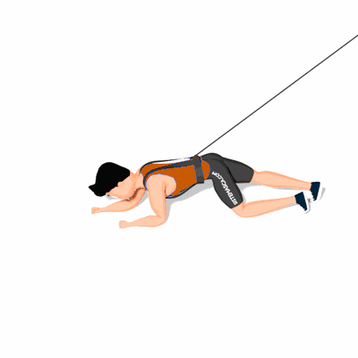

Rastejar com Tração Elástica

Nesse exercício você precisa vencer a resistência do elástico ao se deslocar para frente, e controlar o elástico na volta do movimento. O exercício ajuda na resistência, na estabilidade e na força dos músculos do core.
Ficha Técnica
Tipo: Funcional
Grupo Muscular: Corpo
Aparelho: Nenhum
Músculos: Nenhum
Como realizar
- Prenda o colete de tração elástica em seu tronco;
- Apoiado ao chão, colocando os joelhos flexionados abaixo dos quadris e com os cotovelos flexionados abaixo dos ombros;
- Mantenha a cabeça alinhada a coluna;
- Mova a mão direita para a frente enquanto move o pé esquerdo para a frente. Depois, mova a mão esquerda e o pé direito para a frente;
- Continue neste padrão de ida e volta, movendo sempre as mãos e os pés opostos. Lembre-se de manter o abdomen contraído durante todo o movimento.
 RC STORE
RC STORE